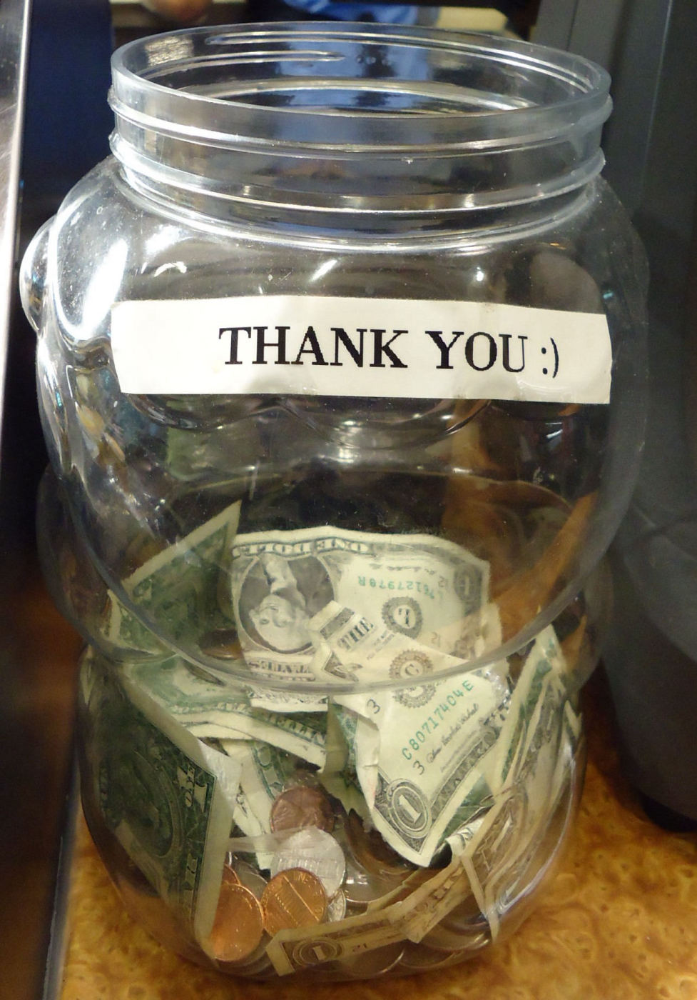

What's Really Going On
Picture a family finishing dinner at a mid-range restaurant in Ohio. The check arrives on a small tablet, and before anyone can even glance at the total, the screen offers three buttons: 18%, 20%, 25% — or a fourth, smaller option, easy to miss, that simply says "custom." There is no button that says zero. To a visitor unfamiliar with American dining, the moment can feel oddly coercive: why is a machine pressuring you to reward someone for a job they were already being paid to do? The uncomfortable answer is that, in the United States, that server may not have been paid very much to do it at all.
Under federal law, a "tipped employee" — anyone who regularly earns more than $30 a month in tips, which covers most restaurant servers and bartenders — can legally be paid as little as $2.13 an hour in direct wages, a figure that hasn't changed since 1991. Employers are allowed to claim a "tip credit" of up to $5.12 an hour, counting the tips a worker receives toward the difference between that $2.13 and the federal minimum wage of $7.25. On paper, if tips don't bring a server's earnings up to at least the minimum wage in a given week, the employer is legally required to cover the gap. In practice, tracking that shortfall accurately is difficult, and workers' rights groups say it rarely happens the way the law intends.
This isn't how tipping works almost anywhere else it's practiced. The custom itself is European in origin — an aristocratic habit that wealthy Americans picked up while traveling abroad during the Gilded Age of the late 1800s and brought home as a mark of sophistication. But the American twist came from something far less genteel. As formerly enslaved Black workers entered the post-Civil War labor market in large numbers — most visibly as Pullman porters serving white passengers on railroad sleeper cars — employers found that tipping let them avoid paying real wages altogether. The Pullman Company openly built its business model around the assumption that its Black porters would survive on the generosity of passengers, not on their paycheck.
In much of America, the tip isn't a reward for good service — it's the paycheck.
Where This Comes From
That history still shapes the law today. Most countries with strong tipping cultures — several in Western Europe, for instance — treat gratuity as a bonus on top of a wage that was already enough to live on. In Japan, offering a tip can even be seen as slightly insulting, implying the service needed a bribe to be good. The United States built something structurally different: a labor system in which a legally protected sub-minimum wage assumes the customer will make up the rest. Skipping the tip in America, then, isn't just a breach of etiquette the way, say, asking for the bill too quickly is in France — it can mean a real person walked home that night having effectively worked for free.
The system isn't uniform even within the U.S. A handful of states — California, Washington, Oregon, Nevada, Alaska, Montana, and Minnesota among them — have abolished the sub-minimum tipped wage entirely, requiring employers to pay the full state minimum wage before a single tip is counted. Restaurant servers in Seattle or San Francisco are, legally speaking, in the same position as a shop clerk. And yet tipping culture hasn't disappeared in those states either — diners there still tip 18 to 20 percent out of habit and social expectation, showing that what started as a wage loophole has, over more than a century, become something closer to an unwritten social contract.
Beyond the Basics
That contract has been expanding fast. Point-of-sale systems like Square and Toast have made it trivially easy for a business to add a tip prompt to any transaction — including ones where no server ever brings anything to a table. Coffee shops, ice cream counters, and even self-checkout kiosks now regularly flash a screen asking for 15, 20, or 25 percent before handing over a to-go coffee. Surveys by groups like Pew Research have tracked rising public irritation with what's been nicknamed "tipflation," as the custom creeps into corners of daily life where, a decade ago, nobody expected a gratuity at all.
Beyond restaurants, the list of people Americans are expected to tip is longer than in almost any other country: bartenders (typically $1 to $2 per drink), hairdressers and barbers (15 to 20 percent), hotel housekeepers ($2 to $5 per night, left in the room, not handed over), taxi and rideshare drivers (15 to 20 percent), and food-delivery couriers, whose base pay from apps can be even lower than a restaurant server's. In each case, the same underlying logic applies: a chunk of that worker's real income was quietly outsourced from the employer's payroll to the customer's wallet, sometime over the last hundred-plus years, and nobody ever renegotiated the deal.
For a foreign visitor, the discomfort of that first tip screen usually isn't really about the money — a few extra dollars rarely breaks a travel budget. It's the unfamiliar sensation of being handed, mid-transaction, a decision that in most countries was already made for you by the employer's payroll department. Not tipping in Tokyo doesn't shortchange anyone; not tipping in Tulsa might. That distinction is exactly what confuses so many visitors, and exactly what most tipping guides fail to explain: this isn't a rule about manners. It's a rule about who, legally, is responsible for paying someone's wage.

What to Know If You Visit
A quick primer before your first restaurant bill in the U.S.:
- At a sit-down restaurant, 18–20% is the baseline; anything below 15% signals real dissatisfaction with the service, not just a personal choice.
- Tip in cash when you can — it reaches the server faster and, in some states, avoids payroll processing that can delay or shrink what they actually take home.
- Bartenders expect $1–2 per drink, or 15–20% on a full tab; leave it even if you're just ordering a beer at the counter.
- Counter-service tip screens (coffee, ice cream, takeout) are optional — you're not expected to hit 20% there, though a couple of dollars is a nice gesture.
- For hotel housekeeping, leave $2–5 per night in cash in the room itself, ideally each morning rather than only at checkout, since staff often rotate.
- If a menu or receipt already shows a "service charge" or "auto-gratuity" — common for large groups — you generally don't need to tip again on top of it; check the fine print first.
The Bigger Picture
It's a useful lesson for a magazine built around the word "why": what looks, on the surface, like a quirky social custom is very often the visible tip of a legal or economic structure most visitors never see. Tipping in America isn't a leftover Victorian courtesy that never went away — it's a live wage system, built in the aftermath of slavery and never fully dismantled, still running quietly under every restaurant check in the country. Understanding that doesn't make the tip screen less awkward. But it does explain, better than any etiquette guide can, why the "right" amount to leave has never really been about generosity at all.
Curious how nearby cultures handle similar rules? Don't miss our pieces on Why Asking for the Bill Too Fast in a Paris Restaurant Is Almost Rude and The Country Where Owing a Friend Twenty Cents Is Serious Business.